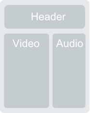
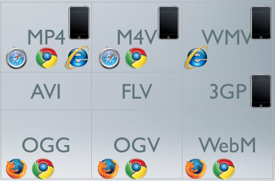

Web-basierte Anwendungen 1
Medienformate
7. November 2013
Studiengang Medieninformatik an der Fachhochschule Köln
Campus Gummersbach
Aysenur Cavusoglu
Kai Dippel
Christian Grevenstein
Gliederung
- Medienformate Allgemein
- Bilder
- Formate
- Einbettung
- Musik
- Videos
- Allgemeines
- Einbettung
- SVG Grafiken
- Übungen
Medienformate
- Bilder
- Musik
- Videos
Bilder
Formate:
- GIF
- JPG
- PNG
GIF
Graphics Interchange Format
| Vorteile | Nachteile |
|---|---|
| verlustfreie Kompression | nur 256 Farben |
| Transparenz und Animation möglich |
- Verwendung: Für alle Animationen für die Flash/HTML5 ungeeignet sind
JPG
Joint Photographic Experts Group
| Vorteile | Nachteile |
|---|---|
| 16,7 Mio Farben | Qualitätsverlust durch Kompression |
| Dateigröße gering | Transparenz und Animation nicht möglich |
- Verwendung: Nahezu alle Fotos im Internet, welche keine Transparenz oder absolut perfekte Qualität benötigen, sind JPEG Dateien
PNG
Portable Network Graphics
| Vorteile | Nachteile |
|---|---|
| Verlustfreie Kompression | keine Animation möglich |
| Transparenz möglich | große Dateien |
| 16,7 Mio Farben | |
| Effektivere Kompression als GIF |
- Verwendung: Für Icons und Grafiken oder auch Fotos mit transparenten Bereichen
Kompatiblität
- Alle wichtigen Browser unterstützen alle wichtigen Bildformate
Implementierung lokaler Bilder
<p><img src="test.png" alt="test"></p>

Implementierung externer Quellen
<p><img src="Link-Adresse des Bildes" alt="test"></p>

Musik
Formate:
xxx
Format xxx
Formate xxx
Beschreibung
Videos
Allgemein
| Jedes Video muss vorbereitet werden |
|---|
| Parameter: |
|
| Vorab: |
| Kein bestes Videoformat --> Anpassung an Browser und Internetverbindung |
Speicherformat
| Videos bestehen aus Video-Track, Audio Track und evtl Meta-Daten wie dem Titel verpackt in einem Container |
| Container: |
|---|
|
Codecs
|
|
| Codecs: | Container: |
|---|---|
|
|
Auflösung und Bitrate
| Auslösung |
|---|
|
| Bitrate |
|
Fazit

|
Video in HTML-Seite einbetten
<object data="videos/movie.mp4" width="538" height="330" type="video/mp4">
</object>
Video von externen Quellen einbetten
<iframe class="youtube-player" type="text/html" width="640" height="385" src="http://www.youtube.com/embed/4KeUaWF3jHQ" frameborder="0" allowfullscreen>
</iframe>
SVG Grafiken mit Raphaël
Scalable Vector Graphics
Wie funktioniert Raphaël? Ganz einfach: Raphaël fügt in das div-Element, das ihm als Bühne übergeben wurde, SVG-Code ein und veranlasst den Browser, die Seite neu zu rendern. Das Hello-Word-Beispiel funktioniert bei SVG-fähigen Browsern auch vollkommen ohne JavaScript- und Raphaël.
<div id="d_canvas">
<svg xmlns="http://www.w3.org/2000/svg" style="overflow: hidden; position: relative;">
<text style="text-anchor: start; font: bold 20px 'Times New Roman',Times,serif;" x="5" y="13" >
Hallo Welt!
</text>
</svg>
</div>
Übungen
Hier geht es zu den Übungen.